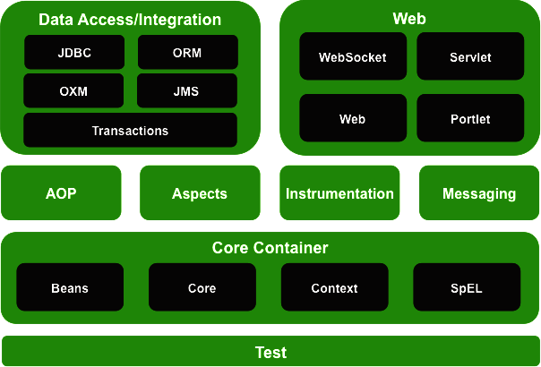

控制反转（Inversion of Control, IOC）：通过XML配置、工厂模式和反射等技术，把对象创建和调用过程交给Spring进行管理，以降低耦合度。
面向切面编程（Aspect Oriented Programming, AOP）：交叉业务的编程问题即为面向切面编程。AOP的目标就是使交叉业务模块化。
pom.xml
<!-- ↓↓↓↓↓↓ 添加依赖 ↓↓↓↓↓↓ --> <dependencies> <dependency> <groupId>org.springframework</groupId> <artifactId>spring-context</artifactId> <version>5.2.6.RELEASE</version> </dependency> </dependencies> <!-- ↑↑↑↑↑↑ 添加依赖 ↑↑↑↑↑↑ -->
ObjectHolder.java
public class ObjectHolder { protected Object object; public Object getObject() { return object; } public void setObject(Object object) { this.object = object; } public ObjectHolder() { this.object = null; } public ObjectHolder(Object object) { this.object = object; } @Override public String toString() { return String.format("ObjectHolder{object=%s}", this.object); } }
Main.java
/** * Bean XML 测试代码 */ import org.springframework.context.ApplicationContext; import org.springframework.context.support.ClassPathXmlApplicationContext; public class Main { public static void main(String[] args) { final String xmlPath = "Main.xml"; ApplicationContext context = new ClassPathXmlApplicationContext(xmlPath); for (String beanName: context.getBeanDefinitionNames()) { Object obj = context.getBean(beanName); // id: obj System.out.printf("%s: %s\n", beanName, obj); } } }
Main.xml
<?xml version="1.0" encoding="UTF-8"?> <beans xmlns="http://www.springframework.org/schema/beans" xmlns:xsi="http://www.w3.org/2001/XMLSchema-instance" xmlns:p="http://www.springframework.org/schema/p" xsi:schemaLocation=" http://www.springframework.org/schema/beans http://www.springframework.org/schema/beans/spring-beans.xsd "> <!-- 默认执行class对象的无参构造方法 --> <bean id="bean_first" class="ObjectHolder" /> <!-- 属性注入：使用property（调用set方法） --> <bean id="bean_property" class="ObjectHolder"> <property name="object" value="Property" /> </bean> <!-- 属性注入：使用constructor（调用构造方法） --> <bean id="bean_constructor_index" class="ObjectHolder"> <constructor-arg index="0" value="ConstructorIndex"/> </bean> <bean id="bean_constructor_name" class="ObjectHolder"> <constructor-arg name="object" value="ConstructorName"/> </bean> <!-- 属性注入：使用p名称空间（调用set方法） --> <!-- xmlns:p="http://www.springframework.org/schema/p" --> <bean id="bean_p" class="ObjectHolder" p:object="NameSpaceP"/> </beans>
Main.xml
<?xml version="1.0" encoding="UTF-8"?> <beans xmlns="http://www.springframework.org/schema/beans" xmlns:xsi="http://www.w3.org/2001/XMLSchema-instance" xsi:schemaLocation="http://www.springframework.org/schema/beans http://www.springframework.org/schema/beans/spring-beans.xsd"> <!-- 设置值：空值 --> <bean id="bean_null" class="ObjectHolder"> <property name="object"><null/></property> </bean> <!-- 设置值：特殊符号 --> <bean id="bean_cdata" class="ObjectHolder"> <property name="object"><value><![CDATA["<<\>>"]]></value></property> </bean> <!-- 设置值：外部bean --> <bean id="bean_outer_inject" class="ObjectHolder"> <constructor-arg index="0" value="外部Bean"/> </bean> <bean id="bean_outer" class="ObjectHolder"> <property name="object" ref="bean_outer_inject"/> </bean> <!-- 设置值：内部bean --> <bean id="bean_inner" class="ObjectHolder"> <property name="object"> <bean class="ObjectHolder"> <constructor-arg index="0" value="内部Bean"/> </bean> </property> </bean> </beans>
Main.xml
<?xml version="1.0" encoding="UTF-8"?> <beans xmlns="http://www.springframework.org/schema/beans" xmlns:xsi="http://www.w3.org/2001/XMLSchema-instance" xmlns:util="http://www.springframework.org/schema/util" xsi:schemaLocation=" http://www.springframework.org/schema/beans http://www.springframework.org/schema/beans/spring-beans.xsd http://www.springframework.org/schema/util http://www.springframework.org/schema/util/spring-util.xsd "> <bean id="obj1" class="ObjectHolder"> <constructor-arg index="0" value="QWE"/> </bean> <bean id="obj2" class="ObjectHolder"> <constructor-arg index="0" value="ASD"/> </bean> <!-- 内部Array注入 --> <bean id="holder_arr" class="ObjectHolder"> <property name="object"> <array> <ref bean="obj1"/><ref bean="obj2"/><value>ZXC</value> </array> </property> </bean> <!-- 内部List注入 --> <bean id="holder_list" class="ObjectHolder"> <property name="object"> <list> <ref bean="obj1"/><ref bean="obj2"/><value>ZXC</value> </list> </property> </bean> <!-- 内部Set注入 --> <bean id="holder_set" class="ObjectHolder"> <property name="object"> <set> <ref bean="obj1"/><ref bean="obj2"/><value>ZXC</value> </set> </property> </bean> <!-- 内部Map注入 --> <bean id="holder_map" class="ObjectHolder"> <property name="object"> <map> <entry key="A" value="10"/> <entry key="B" value="11"/> </map> </property> </bean> <!-- 外部List注入 --> <util:list id="my_list"> <value>地球</value> <value>地球</value> <value>太阳系</value> <value>银河系</value> </util:list> <bean id="holder_list2" class="ObjectHolder"> <property name="object" ref="my_list"/> </bean> <!-- 外部Set注入 --> <util:set id="my_set"> <value>地球</value> <value>地球</value> <value>太阳系</value> <value>银河系</value> </util:set> <bean id="holder_set2" class="ObjectHolder"> <property name="object" ref="my_set"/> </bean> <!-- 外部Map注入 --> <util:map id="my_map"> <entry key="A" value="10"/> <entry key="B" value="11"/> </util:map> <bean id="holder_map2" class="ObjectHolder"> <property name="object" ref="my_map"/> </bean> </beans>
ObjectHolderHolder.java
public class ObjectHolderHolder { ObjectHolder objectHolder; public ObjectHolder getObjectHolder() { return objectHolder; } public void setObjectHolder(ObjectHolder objectHolder) { this.objectHolder = objectHolder; } public ObjectHolderHolder() { this.objectHolder = null; } public ObjectHolderHolder(ObjectHolder holder) { this.objectHolder = holder; } @Override public String toString() { return String.format("ObjectHolderHolder{objectHolder=%s}", this.objectHolder); } }
Main.xml
<?xml version="1.0" encoding="UTF-8"?> <beans xmlns="http://www.springframework.org/schema/beans" xmlns:xsi="http://www.w3.org/2001/XMLSchema-instance" xsi:schemaLocation="http://www.springframework.org/schema/beans http://www.springframework.org/schema/beans/spring-beans.xsd"> <!-- 待注入类 --> <bean id="objectHolder" class="ObjectHolder"> <constructor-arg index="0" value="999"/> </bean> <!-- 通过属性名与id名一致注入 --> <bean id="auto_by_name" class="ObjectHolderHolder" autowire="byName"/> <!-- 通过属性类型一致（此方法不能存在多个类型一致的类） --> <bean id="auto_by_type" class="ObjectHolderHolder" autowire="byType"/> </beans>
Factory.java
import org.springframework.beans.factory.FactoryBean; public class Factory implements FactoryBean<String> { @Override public String getObject() { return "FactoryBean"; } @Override public Class<?> getObjectType() { return null; } @Override public boolean isSingleton() { return false; } }
Main.xml
<?xml version="1.0" encoding="UTF-8"?> <beans xmlns="http://www.springframework.org/schema/beans" xmlns:xsi="http://www.w3.org/2001/XMLSchema-instance" xsi:schemaLocation="http://www.springframework.org/schema/beans http://www.springframework.org/schema/beans/spring-beans.xsd"> <!-- 工厂bean --> <bean id="bean_factory" class="Factory" /> </beans>
LifeCycle.java
import org.springframework.beans.BeansException; import org.springframework.beans.factory.config.BeanPostProcessor; public class LifeCycle implements BeanPostProcessor { protected String name = ""; public void setName(String name) { System.out.println("\tLife set."); this.name = name; } public LifeCycle() { System.out.println("\tLife construct."); } public void initMethod() { System.out.println("\tLife init."); } public void destroyMethod() { System.out.println("\tLife destroy."); } @Override public String toString() { return String.format("Life{name='%s'}", this.name); } // 以下两个方法，会为所有Bean都添加处理器执行 @Override public Object postProcessBeforeInitialization(Object bean, String beanName) throws BeansException { System.out.printf("\tLife %s before init.\n", beanName); return null; } @Override public Object postProcessAfterInitialization(Object bean, String beanName) throws BeansException { System.out.printf("\tLife %s after init.\n", beanName); return null; } }
Main.xml
<?xml version="1.0" encoding="UTF-8"?> <beans xmlns="http://www.springframework.org/schema/beans" xmlns:xsi="http://www.w3.org/2001/XMLSchema-instance" xsi:schemaLocation="http://www.springframework.org/schema/beans http://www.springframework.org/schema/beans/spring-beans.xsd"> <bean id="test_lifecycle_obj" class="java.lang.Object"/> <!-- 生命周期 --> <bean id="test_lifecycle" class="LifeCycle" init-method="initMethod" destroy-method="destroyMethod"> <property name="name" value="BeanLife"/> </bean> </beans>
@Component、@Controller、@Service、@Repository表示当前类为Bean。@Autowired表示根据类型自动注入。@Autowired + @Qualifier(value = "?")表示根据名称进行注入，要求对象有setAttribute方法。@Resource(name="?")表示根据名称进行注入。@Value表示注入值到字段。annotation.User.java
package annotation; import org.springframework.beans.factory.annotation.Autowired; import org.springframework.beans.factory.annotation.Qualifier; import org.springframework.beans.factory.annotation.Value; import org.springframework.stereotype.Component; import javax.annotation.Resource; @Component class Age { @Override public String toString() { return "Age{...}"; } } @Component class Gender { @Override public String toString() { return "Gender{...}"; } } @Component class Name { @Override public String toString() { return "Name{...}"; } } @Component // value默认为首字母小写的类名 public class User { // 根据类型自动注入 @Autowired protected Name name; // 根据名称进行注入（需要配合@Autowired一起使用） @Autowired @Qualifier(value = "gender") protected Gender gender; //@Resource(name = "age") // 根据名称注入 @Resource // 根据类型注入 protected Age age; @Value(value = "Saharan") protected String hometown; @Override public String toString() { return String.format( "FirstAnnotation{name=%s, gender=%s, age=%s, home=%s}", this.name, this.gender, this.age, this.hometown ); } }
Main.xml
<?xml version="1.0" encoding="UTF-8"?> <beans xmlns="http://www.springframework.org/schema/beans" xmlns:xsi="http://www.w3.org/2001/XMLSchema-instance" xmlns:context="http://www.springframework.org/schema/context" xsi:schemaLocation=" http://www.springframework.org/schema/beans http://www.springframework.org/schema/beans/spring-beans.xsd http://www.springframework.org/schema/context http://www.springframework.org/schema/context/spring-context.xsd "> <!-- 扫描包路径 --> <context:component-scan base-package="annotation" /> <!-- 仅包含使用Component注解的类 --> <!-- <context:component-scan base-package="com.example.annotation" use-default-filters="false"> <context:include-filter type="annotation" expression="org.springframework.stereotype.Component"/> </context:component-scan> --> <!-- 排除使用Component注解的类 --> <!-- <context:component-scan base-package="com.example" use-default-filters="false"> <context:exclude-filter type="annotation" expression="org.springframework.stereotype.Component"/> </context:component-scan> --> </beans>
Main.java
import org.springframework.context.ApplicationContext; import org.springframework.context.annotation.AnnotationConfigApplicationContext; import org.springframework.context.annotation.ComponentScan; import org.springframework.context.annotation.Configuration; @Configuration @ComponentScan(basePackages = "annotation") class SpringConfig { } public class Main { public static void main(String[] args) { ApplicationContext context = new AnnotationConfigApplicationContext(SpringConfig.class); for (String beanName: context.getBeanDefinitionNames()) { Object obj = context.getBean(beanName); System.out.printf("%s = %s\n", beanName, obj); } } }
连接点：可以被增强的方法。
切入点：实际被增强的方法。
通知：增强的逻辑部分，常见通知有：
@Before@After@Around@AfterReturning@AfterThrowing切面：把通知应用到切入点的过程。
实现方式：
JDK动态代理CGLIB动态代理（在子类中增强父类方法）pom.xml
<!-- ↓↓↓↓↓↓ 添加依赖 ↓↓↓↓↓↓ --> <dependencies> <dependency> <groupId>cglib</groupId> <artifactId>cglib</artifactId> <version>2.2</version> </dependency> </dependencies> <!-- ↑↑↑↑↑↑ 添加依赖 ↑↑↑↑↑↑ -->
Speaker.java
public interface Speaker { void sayHello(); void makeSpeech(String s); void sayBye(); }
User.java
public class User implements Speaker { protected String name; public User(String name) { this.name = name; } @Override public void sayHello() { System.out.printf("%s: Hello\n", this.name); } @Override public void makeSpeech(String s) { System.out.printf("%s: %s\n", this.name, s); } @Override public void sayBye() { System.out.printf("%s: Bye\n", this.name); } }
Main.java
import java.lang.reflect.InvocationHandler; import java.lang.reflect.InvocationTargetException; import java.lang.reflect.Method; import java.lang.reflect.Proxy; public class Main { static <T> T proxyJDK(Object obj, Class<T> cls) { final ClassLoader L = Main.class.getClassLoader(); final Object R = Proxy.newProxyInstance(L, new Class[]{cls}, new InvocationHandler() { @Override public Object invoke(Object proxy, Method method, Object[] args) throws InvocationTargetException, IllegalAccessException { final String name = method.getName(); System.out.printf("↓↓↓↓ Before %12s ↓↓↓↓\n", name); Object ret = method.invoke(obj, args); // 实际调用 System.out.printf("↑↑↑↑ After %12s ↑↑↑↑\n\n", name); return ret; } }); return (T) R; } public static void main(String[] args) { Speaker speaker = proxyJDK(new User("Peter"), Speaker.class); speaker.sayHello(); speaker.makeSpeech("发言内容"); speaker.sayBye(); } }
Main.java
import net.sf.cglib.proxy.Enhancer; import net.sf.cglib.proxy.MethodInterceptor; import net.sf.cglib.proxy.MethodProxy; import java.lang.reflect.Method; public class Main { public static void main(String[] args) { Enhancer enhancer = new Enhancer(); enhancer.setSuperclass(User.class); enhancer.setCallback(new MethodInterceptor() { @Override public Object intercept(Object obj, Method method, Object[] params, MethodProxy proxy) throws Throwable { final String name = method.getName(); System.out.printf("↓↓↓↓ Before %12s ↓↓↓↓\n", name); Object ret = proxy.invokeSuper(obj, params); System.out.printf("↑↑↑↑ After %12s ↑↑↑↑\n\n", name); return ret; } }); User user = (User) enhancer.create(new Class[]{String.class}, new Object[]{"Ann"}); user.sayHello(); user.makeSpeech("发言内容"); user.sayBye(); } }